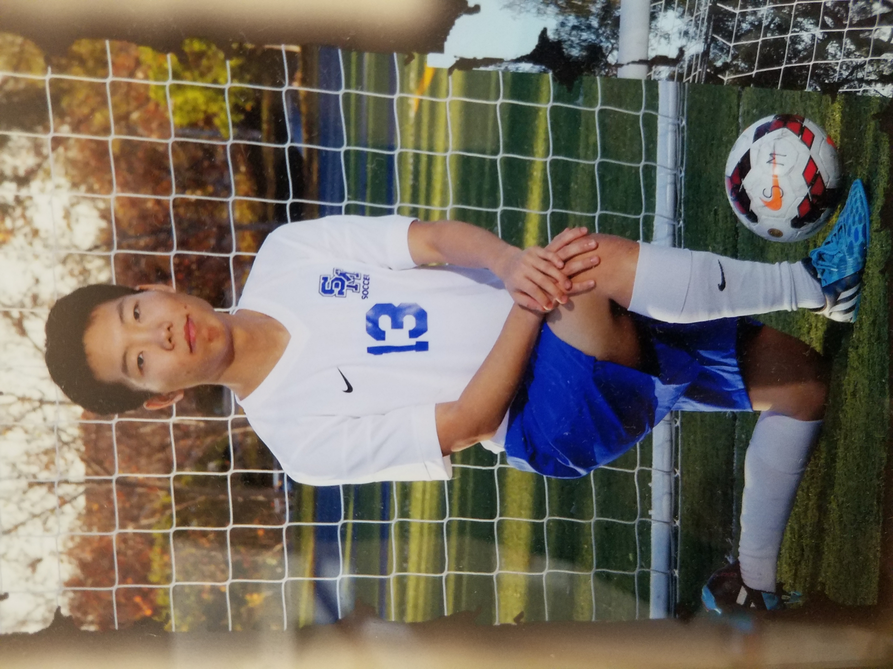
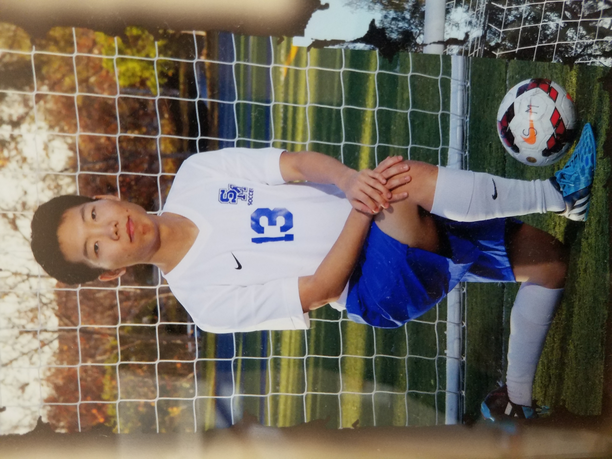
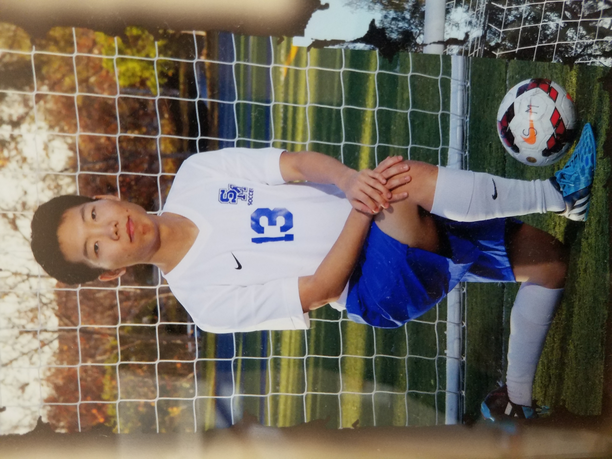
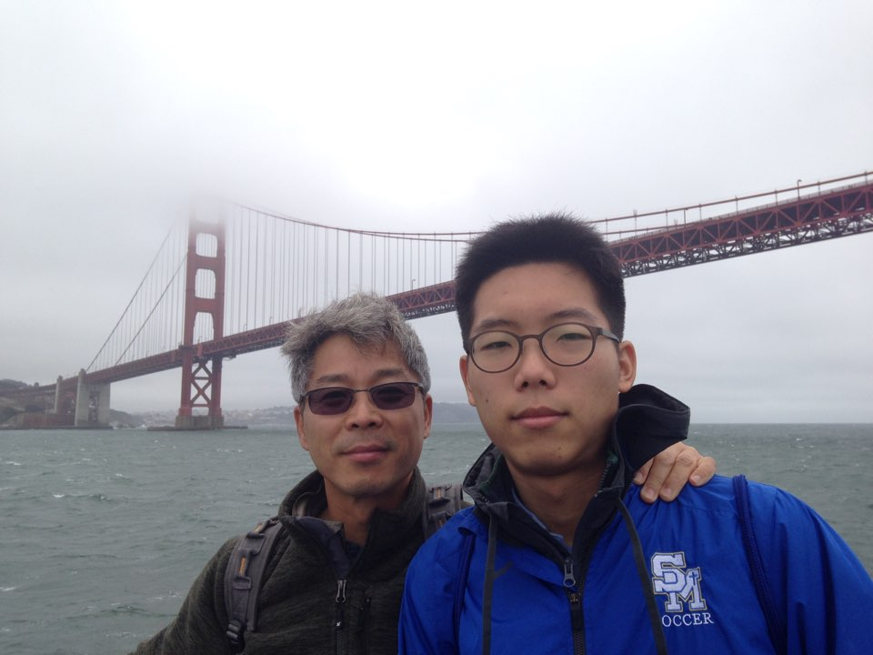
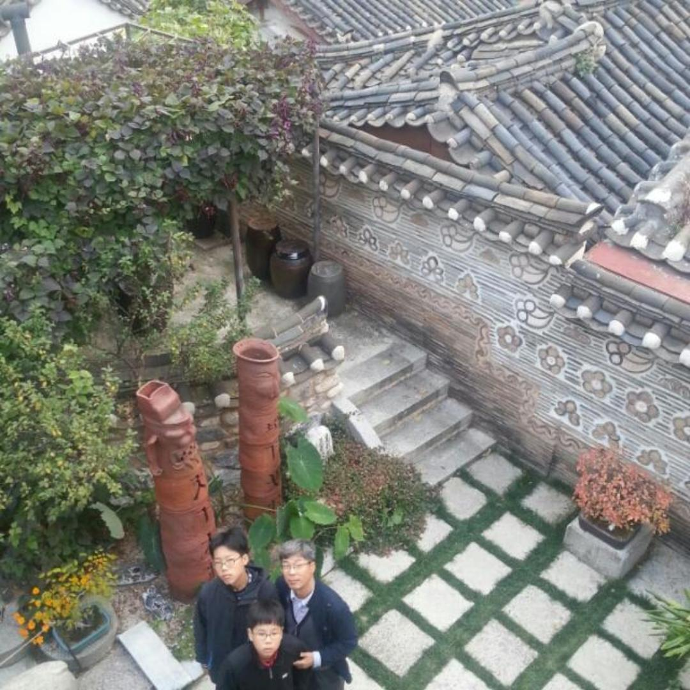
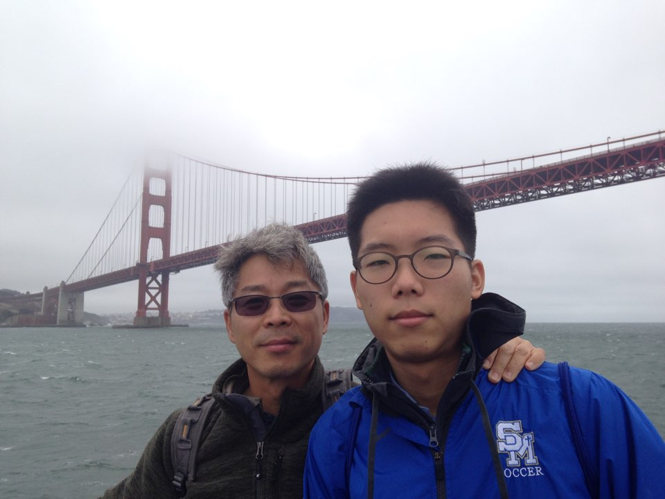
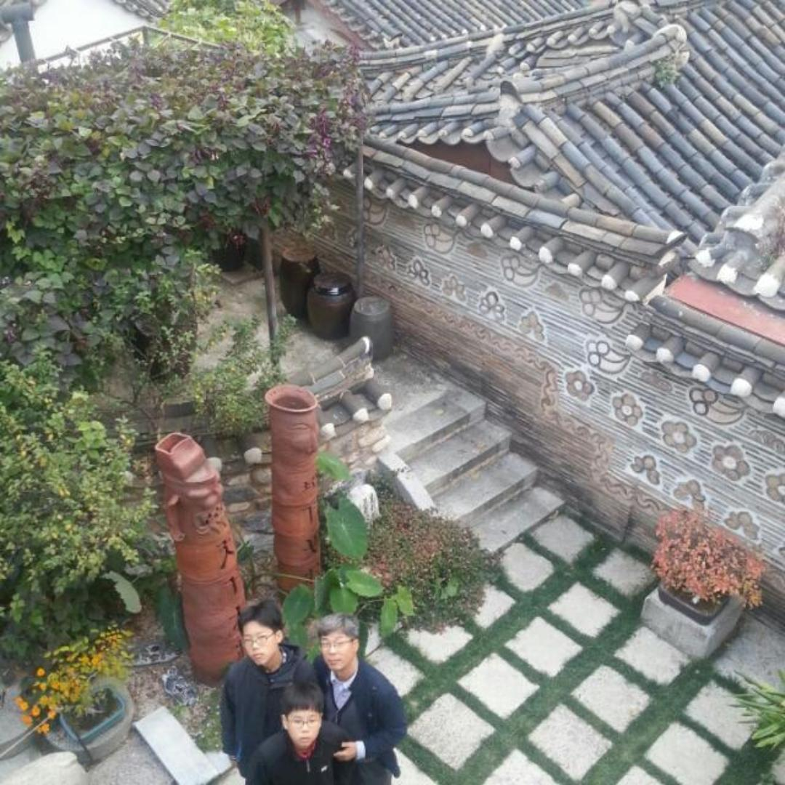

Programming
 I first experienced programming by taking computer-related classes at school(Intro to Programming - Sophomore, AP Computer Science A - Junior).
I first experienced programming by taking computer-related classes at school(Intro to Programming - Sophomore, AP Computer Science A - Junior).
Now, I cannot only code with Java which I learned from school, but also with various languages listed above.
I developed applications using NativeReact and am currently working as a Teaching Assistant at Irvine Code Academy.
I first experienced programming by taking computer-related classes at school(Intro to Programming - Sophomore, AP Computer Science A - Junior).Now, I cannot only code with Java which I learned from school, but also with various languages listed above.
I developed applications using NativeReact and am currently working as a Teaching Assistant at Irvine Code Academy.
Sports
 
I'm a huge sports fan.

I'm a huge sports fan.
I played soccer at school for 2 years in frosh/soph and JV. Like to watch soccer and baseball

I'm a huge sports fan. I played soccer at school for 2 years in frosh/soph and JV. Like to watch soccer and baseball
Math
 Math is undoubtly my favorite subject.
I participated in AMC and tried to take the most challenging math class at school whenever I could.
Math is undoubtly my favorite subject.
I participated in AMC and tried to take the most challenging math class at school whenever I could.
I am currently the only student taking IB Further Mathematics HL at my school.
Math is undoubtly my favorite subject.
I participated in AMC and tried to take the most challenging math class at school whenever I could.I am currently the only student taking IB Further Mathematics HL at my school.
Travelling
 
 
 three years of teaching elementary kids how to speak and write in Korean
three years of teaching elementary kids how to speak and write in Korean